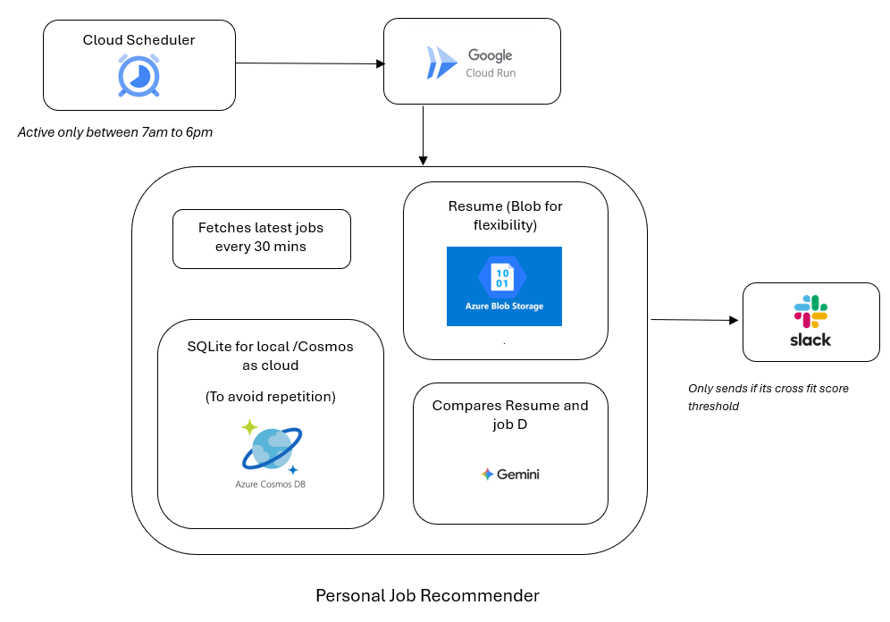
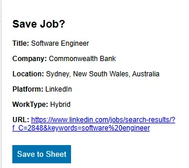
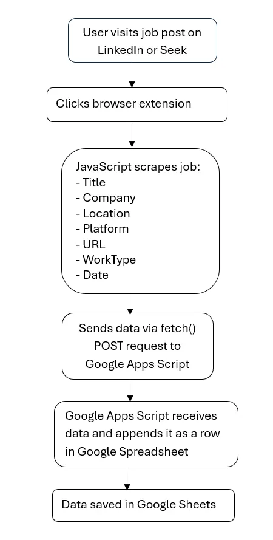
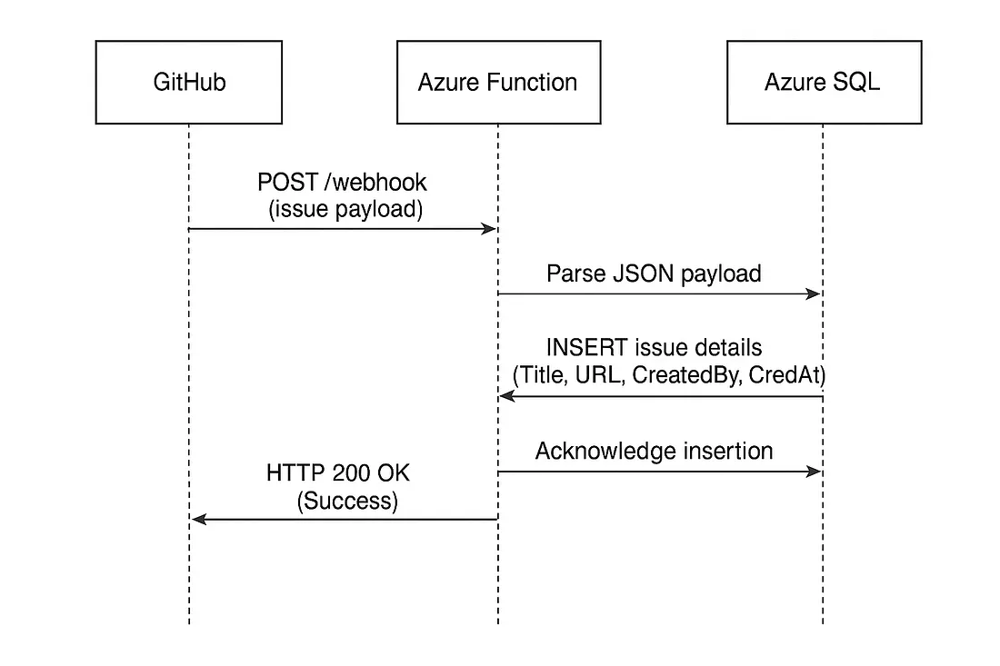
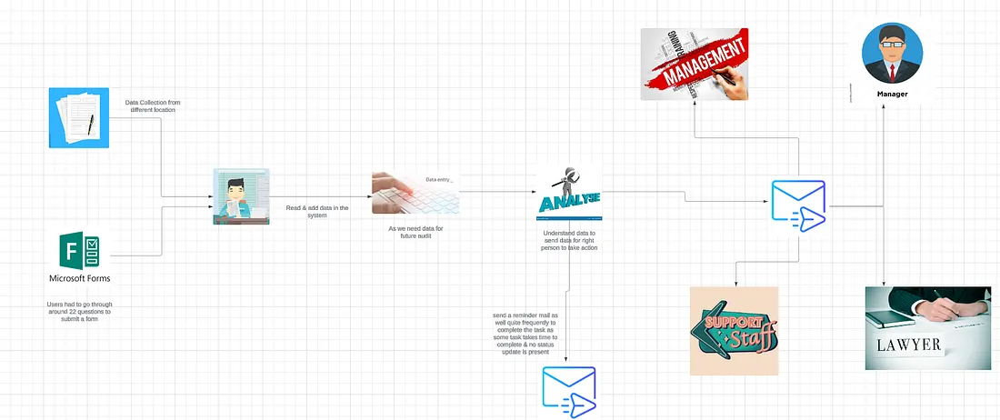
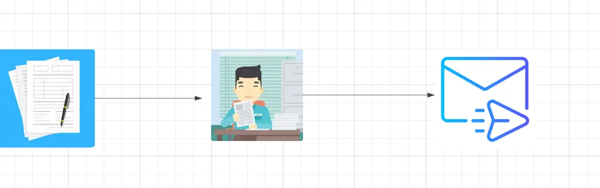

Automate your job search and stay organised with a custom browser extension, Part 2
Missed Part 1?
Read it here
Published: Jul 29, 2025
Read More
Software Developer
Hi there, I’m Rupesh software developer passionate about building reliable, and scalable software that makes an impact.
Built a Chrome extension to track job applications in real time as well as uses Gemini AI to analyze job descriptions against resumes, providing insights into skill gaps and match scores - all while browsing.
Technologies Used: JavaScript, Chrome Extension API, Gemini AI, HTML, CSS
An AI-driven job assistant that fetches job postings, compares them against my resume using Gemini AI, and sends Slack notifications for high-match roles — powered by Google Cloud and Azure.
Technologies Used: JavaScript, Node.js, Gemini AI, Google Cloud, Azure, Slack API

Developed an interactive dashboard with real-time analytics and visualizations, improving business insights and operational efficiency.
Technologies Used: JavaScript, NodeJS, React, Express.js, MongoDB

Engineered a scalable backend for a social media app using FastAPI and SQL, ensuring efficient data communication and improved performance.
Technologies Used: Python, FastAPI, SQL, GitHub, CI/CD, Swagger, Heroku

Developed a web scraping application that allows users to monitor the prices of items and receive email notifications when the price decreases.


Missed Part 1?
Read it here
Published: Jul 29, 2025
Read More
Between LinkedIn, Seek, and company career sites, it’s easy to lose track
Published: Jul 27, 2025
Read More
In today’s tech-driven world, software systems rarely operate in isolation. Whether you’re syncing customer data between your CRM and…
Published: Jul 23, 2025
Read More
The Solution: Automating Compliance for Efficiency and Accountability
Published: Nov 27, 2024
Read More
Compliance is the cornerstone of any organization, from small businesses to large enterprises, ensuring safety, accountability, and smooth…
Published: Nov 20, 2024
Read MoreDelivered digital transformation and UCaaS/UC solutions, streamlining workflows and automating compliance processes.
Technologies Used: React, JavaScript, Node.js, C#, .NET, API, Serverless
Delivered digital transformation and data migration solutions for legal firms, improving data access and operational efficiency.
Technologies Used: React, JavaScript, Node.js, .NET, C#, SQL, APIs, Graph API, PowerShell
Delivered full-stack solutions to provide actionable insights for strategic workforce planning, enhancing data-driven decision-making.
Technologies Used: React, JavaScript, TypeScript, D3.js, Python, Figma, Auth0, Confluence, API development
Proficient in building reusable components and hooks.
Experience in API development, Express.js, and serverless functions.
Backend development with clean architecture and microservices.
Cloud services, Azure Functions, Service Bus, and DevOps pipelines.
Automated API testing and API management experience.
I’m a software developer based in Sydney, passionate about crafting software that solves real-world problems. From building clean APIs to automating workflows and designing intuitive frontends, I bring curiosity and precision to every project.
I care deeply about building systems that scale, collaborate effectively across teams, and improve user experience — one deploy at a time.
I’m currently building a cloud-native backend for my Chrome extension using Golang, Docker, and Google Cloud Run. The goal is to create a scalable, event-driven API that integrates seamlessly with modern frontend workflows.
Along the way, I’m exploring secure authentication patterns with AuthKit and optimizing my data layer using Neon Postgres — pushing for a balance between performance, simplicity, and developer experience.
I'm always open to meaningful conversations and opportunities. Feel free to connect with me on LinkedIn.
Connect on LinkedIn